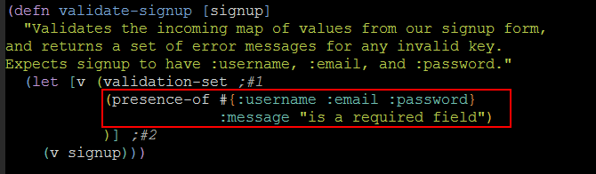

Handling form input
Table of Contents
1 폼 입력 값 Validating
1.1 준비단계 : 회원가입 처리(POST) 뼈대 작성하기
일단 간단하게 회원가입을 시도하면 nice job 이라는 메세지를 출력하도록 해보자. src/hipstr/routes/home.clj 를 열고 POST 메서드의 signup URL을 처리하는 defroute를 추가한다.
(POST "/signup" [& form] (str "nice job"))
위의 단계에서 이상이 없었다면 다음은 자세한 응답 페이지를 만들기 위해 상단 네임스페이스 선언부에 ring.util.response 네임스페이스를 사용한다고 작성한다.
[ring.util.response :as response]
회원가입 POST 메서드를 처리하는 함수를 작성한다. 일단 커멘트 아웃 처리(#_) 해둔다.
(defn signup-page-submit [user] #_(let [errors (signup/validate-signup user)] (if (empty? errors) (response/redirect "/signup-success") (layout/render "signup.html" (assoc user :errors errors)))))
defroute를 다음과 같이 변경한다.
(defroutes home-routes (GET "/" [] (home-page)) (GET "/about" [] (about-page)) (GET "/signup" [] (signup-page)) (POST "/signup" [& form] (signup-page-submit form)) (GET "/signup-success" [] "Success!"))
1.2 폼 입력 검증 프로그램 작성
이제부터 본격적인 폼 입력 값 검증 프로그램을 작성해 본다.
1.2.1 lib-noir 라이브러리
- 이를 위해서 lib-noir 라이브러리를 사용한다.
- 입력 값 검증을 도와주는 다양한 함수를 제공한다.
- noir.validation 네임스페이스를 가지고 있다.
- 그러나 특정 문법을 강요하거나 테스트가 힘들어지는 등, 사용성에 문제가 있기 때문에 Validateur 라이브러리를 사용한다.
1.2.2 Validateur 라이브러리
- 여러 개의 validator를 클로저 맵으로 표현할 수 있게 해준다.
- http://clojurevalidations.info/ 에서 더 많은 정보를 확인 가능
- 프로젝트에 라이브러리를 사용하겠다고 설정
project.clj 파일을 열고 [com.novemberain/validateur "2.3.1"] 를 추가해준다.
- 유저 가입 폼 검증 네임스페이스 만들기
- 가끔씩은 어디에 validation 코드를 적어야 하는지 어려울 수 있다.
- Validateur 가 가진 힘은 validator를 만들고, 재사용하고, 조합해서 더 복잡한 validator를 만들 수 있게 해주기 때문이다.
- 그래서 각 validator는 그에 어울리는 네임스페이스를 가져야 한다.
- 본 프로젝트에서는 /src/hipstr 폴더의 하위에 validators 폴더를 만들고 여기에 validator들을 작성할 것이다.
mkdir validators
user_validator.clj 를 만들고 네임스페이스 선언을 작성한다.
(ns hipstr.validators.user-validator (:require [validateur.validation :refer :all]))
(주의! clj 파일에는 하이픈(-) 대신 언더바(_)로 네이밍을 해야한다. 안그러면 repl같은 곳에서 해당 파일을 찾지를 못한다.)
- 필수 필드를 검증하기
- validate-singup 함수를 추가한다.
- presence-of 함수를 사용해서 해당 키의 존재여부를 확인할 수 있다.
- validation-set 함수를 사용해서 validator를 생성할 수 있다.
(defn validate-signup [signup] "Validates the incoming map of values from our signup form, and returns a set of error messages for any invalid key. Expects signup to have :username, :email, and :password." (let [v (validation-set ;#1 (presence-of #{:username :email :password}))] ;#2 (v signup)))다음과 같이 repl에서 presence-of 함수의 동작을 테스트해볼 수 있다.
lein repl (require '[validateur.validation :refer :all]) (let [presence-of-fn (presence-of #{:username :email :password})](presence-of-fn {:username "TheDude"}))또는 다음과 같이 방금 작성한 validate-signup 함수를 테스트 해볼 수도 있다.
(use '[hipstr.validators.user-validator]) (validate-signup {:username "TheDude"}) (validate-signup {:username "TheDude" :email "thedude@bides.net" :password "12345678"})필수 입력 필드에 대한 기본 출력 메세지는 "can't be blank" 인데 이 것을 :message 키를 사용해서 변경할 수 있다.
validate-singup 함수의 presence-of 부분을 다음과 같이 변경해본다.
(presence-of #{:username :email :password} :message "is a required field")
그리고 repl에서 다음과 같이 입력해서 테스트해본다.
(use 'hipstr.validators.user-validator :reload) (validate-signup {:username "TheDude"})메세지가 "is a required field"로 변경된 것을 볼 수 있다.
- 입력 값의 포맷을 검증하기
예를 들어 유저명(username)은 숫자와 영문자만 사용할 수 있도록 강제하고 싶다고 하자. 그러면 다음과 같이 format-of 함수를 사용해서 룰을 설정할 수 있다.
(format-of :username :format #"^[a-zA-Z0-9_]*$" :message "Only letters, numbers, and underscores allowed.")
그리고 다시 repl에서 테스트 해본다.
(use 'hipstr.validators.user-validator :reload) (validate-signup {:username "The Dude" :email "thedude@bides.net" :password "12345678"})그러나 :username을 입력하지 않으면 어떻게 될까?
:username을 뺀 다음 값으로 테스트 해본다.
(validate-signup {:email "thedude@bides.net" :password "12345678"})그러면 다음과 같이 동일한 의미를 가진 두 개의 메세지가 출력된다.
왜 그럴까? presence-of에서 실패한 결과가 하나, format-of에서 실패한 결과가 또 하나 추가되기 때문이다. 다음과 같이 :blank-message 를 추가해서 하나의 메세지만 나오도록 해결할 수 있다.
(format-of :username :format #"^[a-zA-Z0-9_]*$" :message "Only letters, numbers, and underscores allowed." :blank-message "is a required field")
- 입력 값의 길이를 검증하기
패스워드의 특정 길이를 강제하고 싶다고 하자. 그러면 다음과 같이 length-of 함수를 사용해서 validator를 작성할 수 있다.
- 이메일 필드를 검증하기
- 재사용가능한 validator 만들기